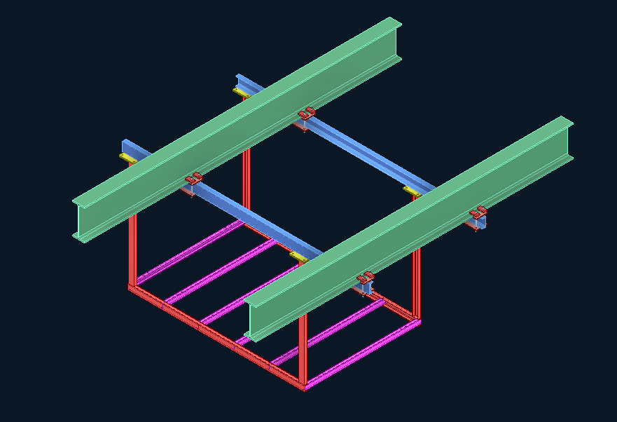
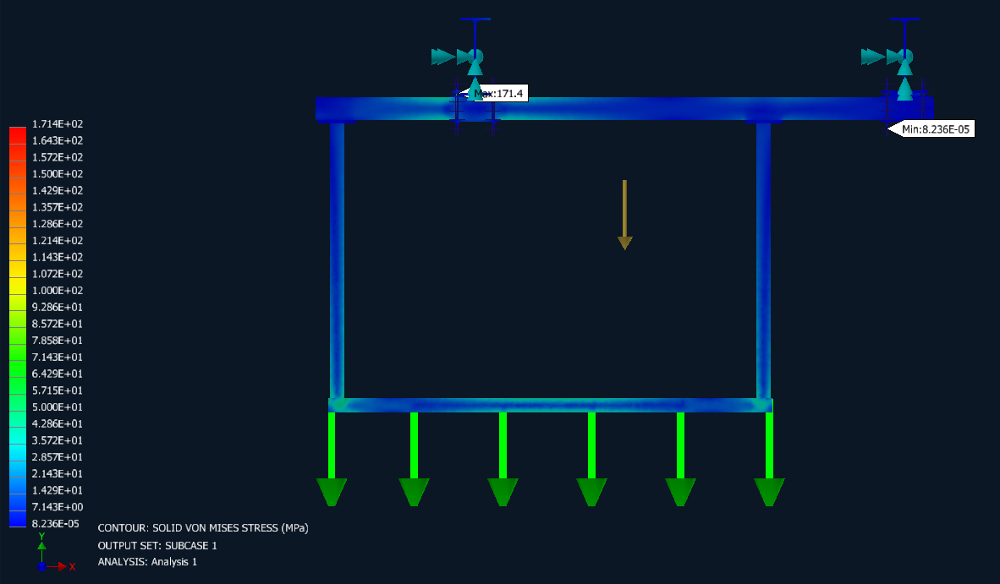
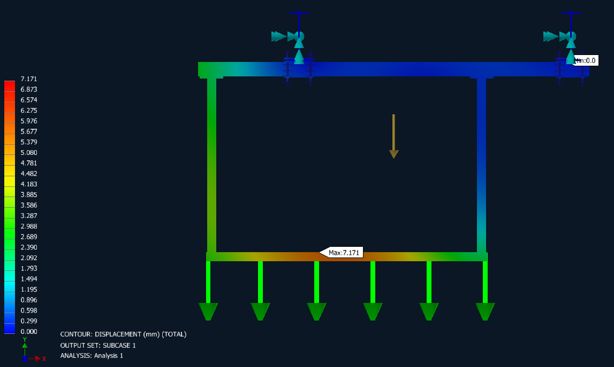
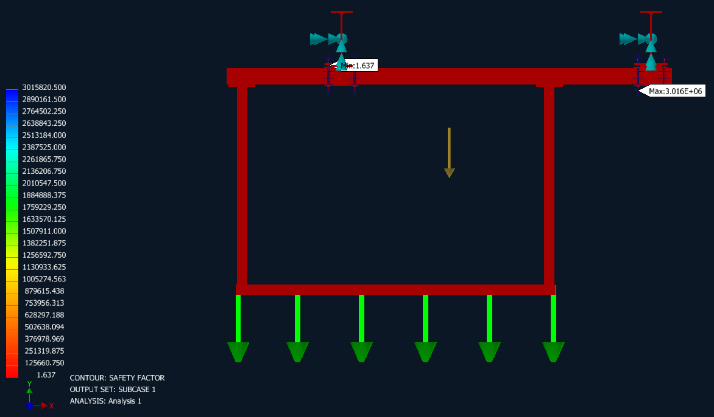
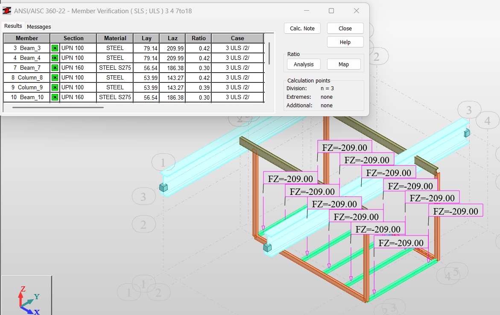
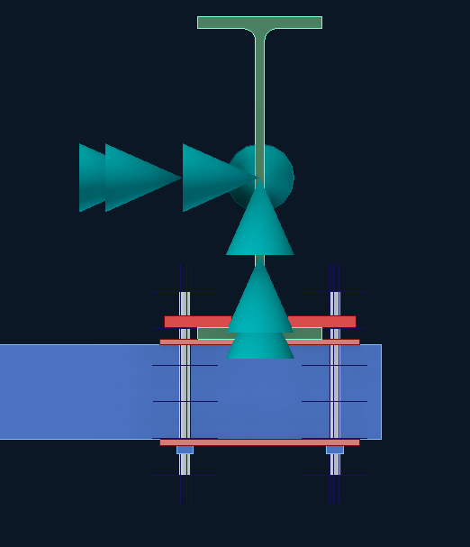
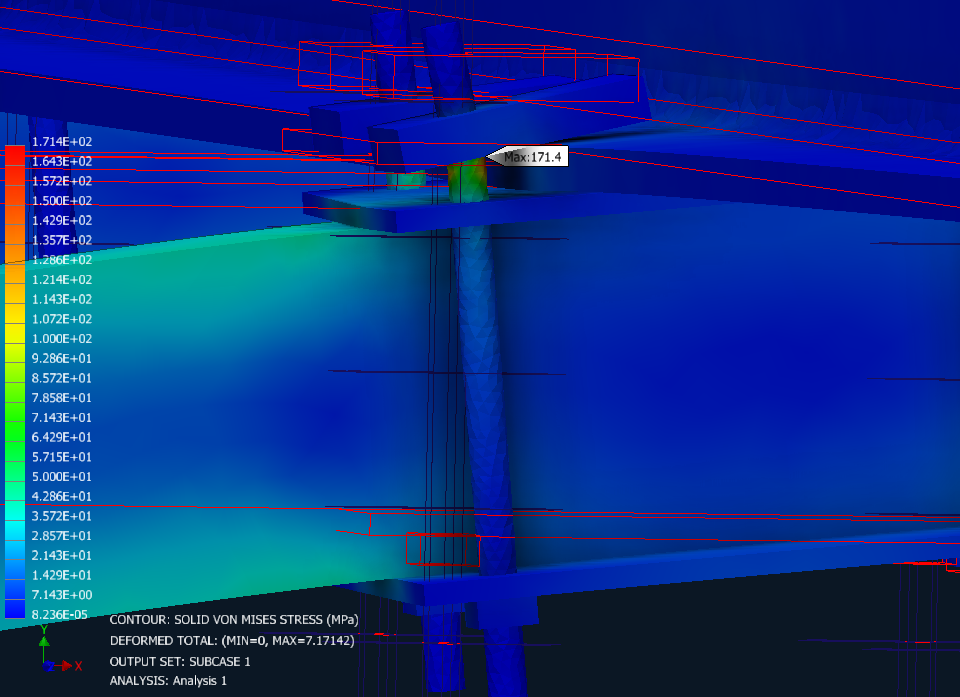
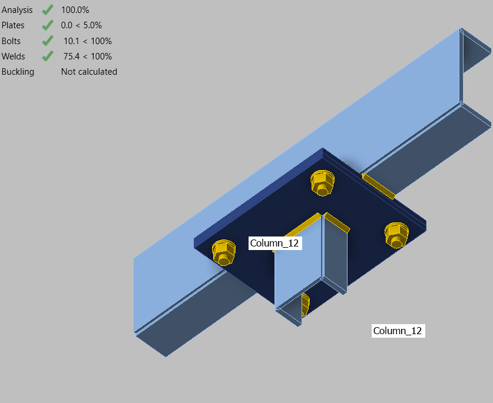
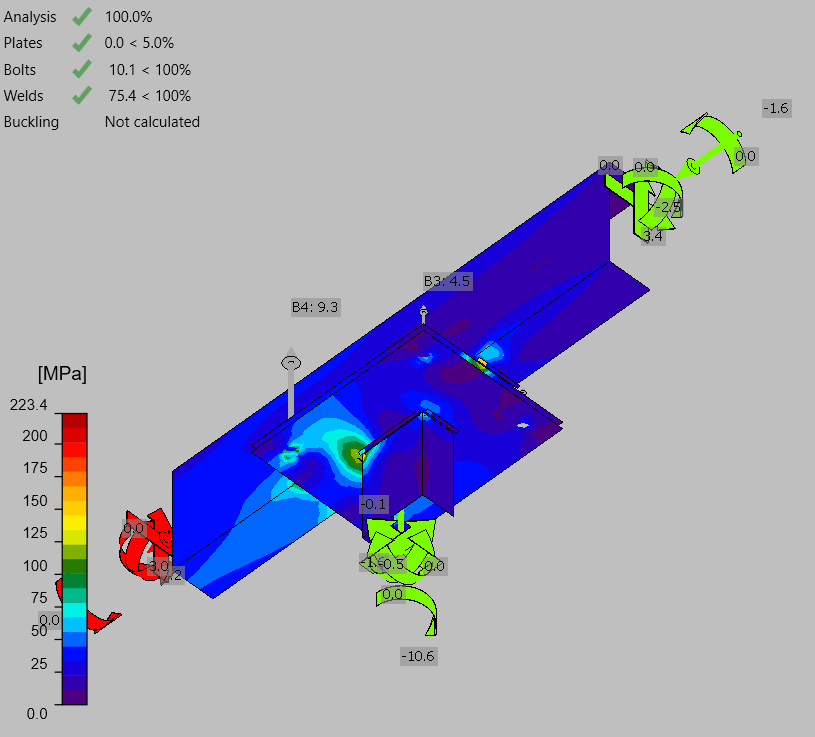

Peak equivalent stress reported in the whole-frame finite element model.
Structural analysis · Finite element design
2.5-Ton AHU Frame Support with Structural Locking Mechanism
Design and verification of a suspended equipment-support frame with a purpose-designed locking mechanism connecting the frame to the main structural beams.

Project overview
This support system was engineered to carry a 2.5-ton air-handling unit while providing a defined load path into the main building structure. The design combines a fabricated secondary frame with a dedicated locking mechanism that secures the support to the principal structural beams, allowing the frame, local interfaces, and connection components to be assessed as an integrated system.
Verified FEA results
Whole-frame structural response
The principal analysis results are highlighted below for direct review.
Maximum resultant deformation under the analyzed equipment-load case.
Lowest reported factor of safety across the analyzed support frame.
Design scope
- Develop a steel support frame for the 2.5-ton AHU equipment load.
- Establish a clear load-transfer path from the equipment frame into the main structural beams.
- Design a locking mechanism to mechanically secure the secondary frame at the primary-beam interfaces.
- Perform global structural analysis to select and verify the principal frame members.
- Evaluate whole-frame von Mises stress, total displacement, and factor of safety using finite element analysis.
- Assess the locking mechanism and connection region through focused component-level stress checks.
- Review the bolted and welded connection arrangement as part of the coordinated structural design.
Analysis approach
The workflow combined member-level structural verification with whole-frame and localized finite element models. The global model established the response of the support under the distributed AHU load, while detailed assessments examined the locking mechanism and the connection between the support and the main beams. This approach made it possible to review both the overall frame behavior and the more concentrated stresses at its structural interfaces.
Engineering outcome
The completed design integrates the equipment-support frame, structural members, locking mechanism, and main-beam connections into one coordinated solution. The reported whole-frame results provide clear measures of stress, deformation, and design margin, while the focused connection studies document the local behavior of the locking and attachment components.
Project gallery








Select any image to open the full-size viewer and review the analysis details.